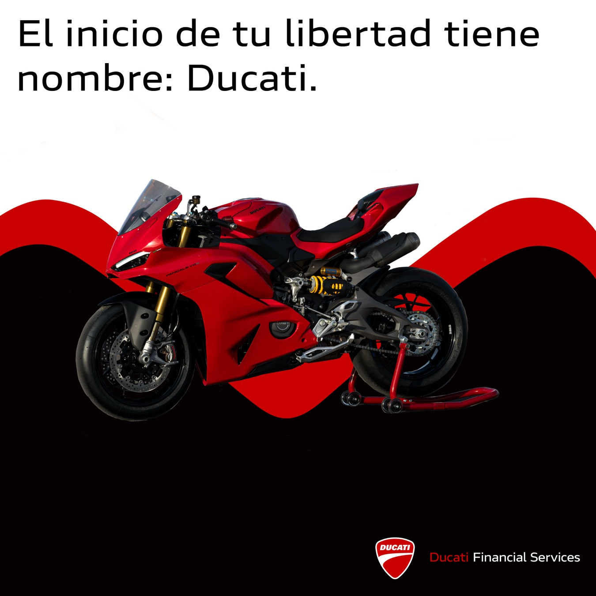
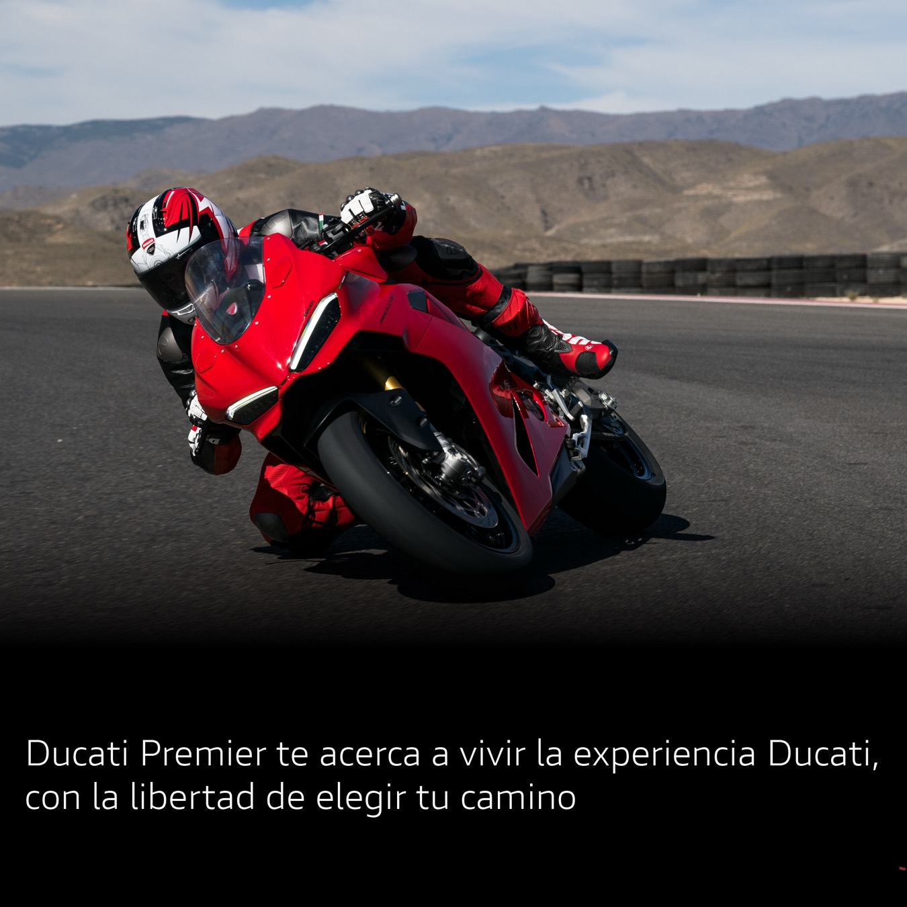
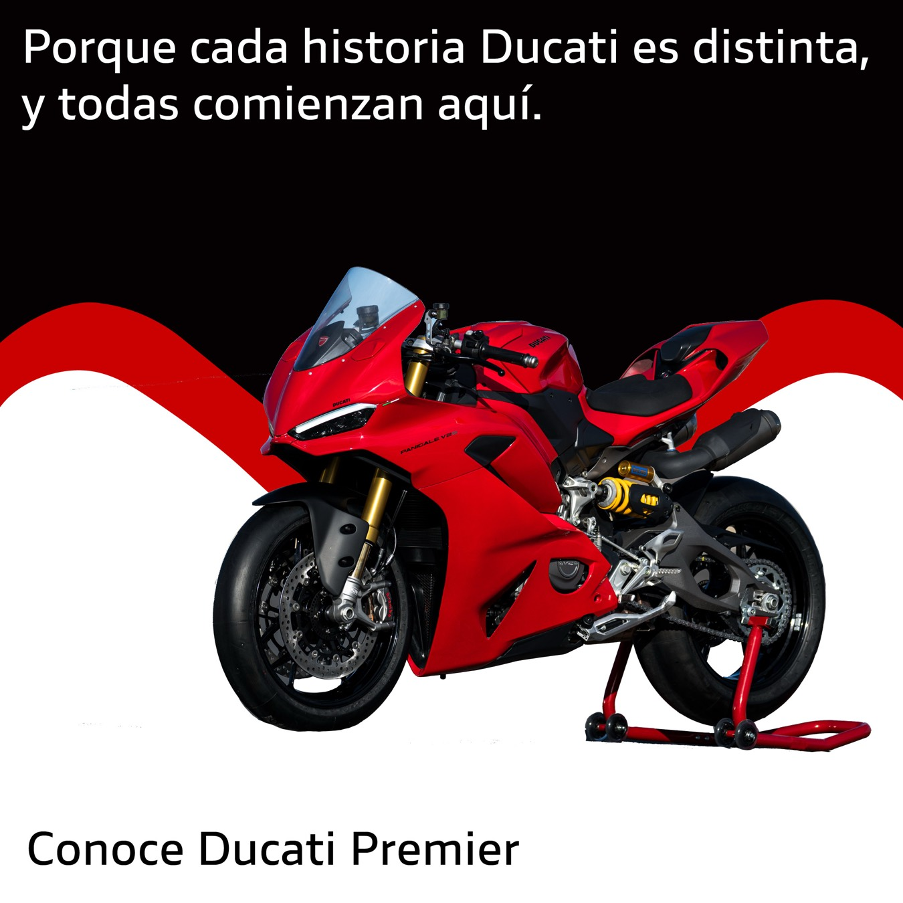
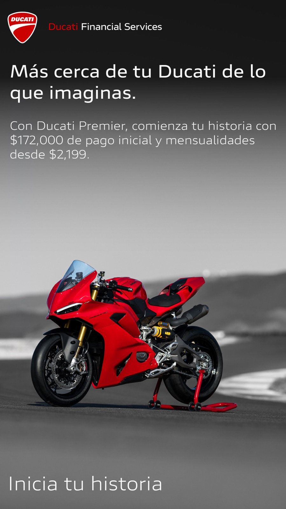

Campaign · Ducati Financial Services
Ducati Premier: Panigale V2S 2025
A multi-format launch for the Ducati Premier financing plan, built around the Panigale V2S 2025: one visual system adapted to carousel, feed post, story, motion graphic and reel.



1 / 3

